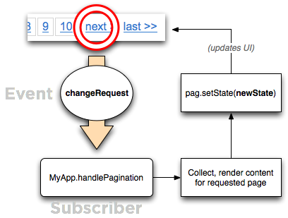
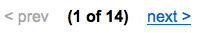

<?php 
$title="Yahoo! UI Library: Paginator";
$section="paginator";
$component="Paginator Control";
$highlightSyntax = true;
$releasenotes = true;
include("../inc/header.inc");
?>

<div id="yui-main">
<div class="yui-b">
  <div class="yui-ge">
      <div class="yui-u first">

<div id="promo" class="component">

    <h1><?php echo $title; ?></h1>
    <p>The Paginator Control allows you to reduce the page size and render time of your site or web application by breaking up large data sets into discreet pages.  Paginator addresses the navigation aspect of chunked content, offering a set of controls that it can render into your UI to allow users to navigate through logical sections of local or remote data.</p>
    <p>The Paginator Control was introduced with <a href="../datatable/">DataTable</a> in version 2.5.0, but it has been broken out for general use as of version 2.6.0.</p>
    <div>
        <h4>On This Page:</h4>
        <ul>
            <li><a href="#start">Getting Started</a></li>
			<li><a href="#using">Using Paginator</a></li>
            <li><a href="#mobile">YUI on Mobile Devices</a></li>
            <li><a href="#support">Support &amp; Community</a></li>
            <li><a href="#filingbugs">Filing Bugs and Feature Requests</a></li>
        </ul>
		
    </div>

<?php
include('../inc/quicklinks.inc');
?>
  
</div>

<h2 id="start" class="first">Getting Started</h2>
<p>To use Paginator, include the following source files in the web page:</p>
<textarea name="code" class="HTML" cols="60" rows="1">
<!-- Core + Skin CSS -->
<link rel="stylesheet" type="text/css" href="http://yui.yahooapis.com/<?php echo($yuiCurrentVersion);?>/build/paginator/assets/skins/sam/paginator.css">

<!-- Dependencies --> 
<script type="text/javascript" src="http://yui.yahooapis.com/<?php echo($yuiCurrentVersion);?>/build/yahoo-dom-event/yahoo-dom-event.js"></script>
<script type="text/javascript" src="http://yui.yahooapis.com/<?php echo($yuiCurrentVersion);?>/build/element/element-min.js"></script>

<!-- Source File -->
<script type="text/javascript" src="http://yui.yahooapis.com/<?php echo($yuiCurrentVersion);?>/build/paginator/paginator-min.js"></script>
</textarea>
<?php
include "../inc/include-notice.inc";
?>

<h3>Basic HTML Setup</h3>
<p>Paginator does not have to render any controls, but it is likely that you will want to.  All you need in your markup are container nodes into which the Paginator can render its controls.  One Paginator instance can render controls into any number of containers.</p>

<textarea name="code" class="HTML" cols="60" rows="1">
<div id="pag"><!-- pagination controls will go here --></div>

<!-- depending on the pagination UI components you choose, you could also use -->

<span id="pag"><!-- and pagination controls will go here --></span>
<p id="pag"><!-- and pagination controls will go here --></p>
</textarea>

<p>Currently, it is not strictly required that the container elements be included in the live DOM, but that may become necessary for future or custom UI components.</p>

<h3>Initializing Paginator</h3>
<p>The Paginator class is located at <code>YAHOO.widget.Paginator</code>.  The constructor takes a single argument, an object literal containing configuration values.</p>
<textarea name="code" class="JScript" cols="60" rows="1">
var pag = new YAHOO.widget.Paginator({
    rowsPerPage  : 10,
    totalRecords : 100,
    containers   : [ idStr1, idStr2 ] // or idStr or elem or [ elem, elem ]
});
pag.render();
</textarea>

<p>Configuration can be omitted at construction, but these attributes must be set before the Paginator is <code>render()</code>ed.</p>
<textarea name="code" class="JScript" cols="60" rows="1">
var pag = new YAHOO.widget.Paginator();
...
pag.set('rowsPerPage', 10);
pag.set('totalRecords', 100);
pag.set('containers', containerEl);

// OR

pag.setState({
    rowsPerPage  : 10,
    totalRecords : 100,
    containers   : containerEl
});

pag.render();
</textarea>

<p>By default, Paginator will render controls into each specified container like this:</p>


<h2 id="using">Using the Paginator</h2>
<p>This section describes how to customize the Paginator and includes:</p>
<ul>
    <li><a href="#setup">Attaching Paginator to Your Data</a></li>
    <li><a href="#state">Pagination State</a></li>
    <li><a href="#api">Public API methods</a></li>
    <li><a href="#config">Paginator Configuration</a></li>
    <li><a href="#events">Paginator Events</a></li>
    <li><a href="#uicomponents">Templates and UI Components</a></li>
    <li><a href="#datatable">Paginator and DataTable</a></li>
</ul>

<h3 id="setup">Attaching Paginator to Your Data</h3>
<p>Paginator does not directly modify your content.  The key to wiring up Paginator to work with your page, application, or widget is to subscribe to its <code>changeRequest</code> event.</p>

<textarea name="code" class="JScript" cols="60" rows="1">
var pag = new YAHOO.widget.Paginator({
    rowsPerPage : 10,
    totalRecords: 100,
    containers  : 'paging'
});

var MyApp = {
    /* application API */
    ...

    handlePagination : function (newState) {
        // Collect page data using the requested page number
        var pageContent = MyApp.getContent(newState.page);

        // Update the content area
        MyApp.replaceContent(pageContent);

        // Update the Paginator's state
        pag.setState(newState);
    }
};

pag.subscribe('changeRequest',MyApp.handlePagination);
</textarea>

<p>When users interact with any of the Paginator's controls (or calls are made to the Paginator's public API methods) the Paginator does not immediately update its state and UI.  Instead, it broadcasts its <code>changeRequest</code> event to all subscribers, passing an object describing the requested pagination state.</p>
<p>As a subscriber, your app is then responsible for collecting and displaying the data or content appropriate for that state, then updating the Paginator's state accordingly. The Paginator's UI updates automatically when it's state is changed.</p>



<h3 id="state">Pagination State</h3>
<p>The object provided to <code>changeRequest</code> subscribers is the output from the Paginator's <code>getState</code> method.  Called without input, <code>getState</code> returns an object literal in the following form:</p>

<textarea name="code" class="JScript" cols="60" rows="1">
{
    paginator    : (the Paginator instance),
    page         : (int), // the current page
    records      : [ (int), (int} ], // index offsets of first and last records on the current page
    recordOffset : (int), // index offset of the first record on the current page
    totalRecords : (int), // current totalRecords value
    rowsPerPage  : (int)  // current rowsPerPage value
}
</textarea>

<p>If passed an object literal with proposed values for any of these properties (except <code>paginator</code> and <code>records</code>), the returned state will contain the full calculated state given the provided modifications and an additional property, <code>before</code>.  The value assigned to <code>before</code> will be the current state.</p>

<textarea name="code" class="JScript" cols="60" rows="1">
// Get the current pagination state
var cur = pag.getState();

// Get the proposed state if rowsPerPage were updated and we moved to page 6
var proposed = pag.getState({ rowsPerPage : 15, page : 6 });

// The proposed state contains the current state, stored under 'before'
// Assert.areEqual(cur.page, proposed.before.page);
</textarea>

<p>Paginator does not store transitional states.  When users interact with the UI, the <code>changeRequest</code> event is fired with the proposed state object and immediately forgotten.  Until the subscriber directly updates the Paginator's state, the Paginator will remain in its current state.</p>

<h3 id="api">Public API methods</h3>
<p>Some of the more useful methods in Paginator's API are:</p>
<dl>
    <dt>render()</dt>
        <dd>Creates the content for the configured <a href="#uicomponents">template</a> in the specified containers.</dd>
    <dt>getCurrentPage()</dt>
        <dd>Returns the current page number.</dd>
    <dt>getPageRecords(n)</dt>
        <dd>Returns an array with two values: the index/offset associated with the first and last record on the current page or page supplied as an input parameter.</dd>
    <dt>getTotalPages()</dt>
        <dd>Returns the number of pages available for paging given the current totalRecords and rowsPerPage configuration.</dd>
    <dt>getState(o)</dt>
        <dd>Returns an object representing the current or proposed state, depending on the input.  See <a href="#state">Pagination State</a>.</dd>
    <dt>hasPage(n)</dt>
        <dd>Returns true if the input page is available to navigate to.</dd>
    <dt>setPage(n)</dt>
        <dd>Fires a <code>changeRequest</code> with the proposed page.</dd>
    <dt>setRowsPerPage(n)</dt>
        <dd>Fires a <code>changeRequest</code> with the proposed <code>rowsPerPage</code>.</dd>
    <dt>setTotalRecords(n)</dt>
        <dd>Fires a <code>changeRequest</code> with the proposed <code>totalRecords</code>.</dd>
    <dt>setState(o)</dt>
        <dd>Applies state information to the Paginator's attributes in batch, triggering a UI update if necessary.</dd>
</dl>

<p><em>Note</em>: the Paginator's state is maintained in its attributes <code>recordOffset</code>, <code>totalRecords</code>, and <code>rowsPerPage</code>.  Calling <code>set</code> directly on these attributes will cause the UI to update if necessary.  It will not trigger a <code>changeRequest</code>.</p>

<textarea name="code" class="JScript" cols="60" rows="1">
// Broadcast a changeRequest to subscribers.  totalRecords remains unchanged
pag.setTotalRecords(100);

// totalRecords changed.  UI updated.  changeRequest will not be fired
pag.set('totalRecords',100);
</textarea>

<h3 id="config">Paginator Configuration</h3>
<p>A full list of configuration options is included in the <a href="../docs/module_<?php echo($section);?>.html">API docs</a>.  The most common configurations passed at construction are:</p>
<dl>
    <dt>rowsPerPage</dt>
        <dd>Number of records associated with a single &quot;page&quot;. <strong>(required)</strong>.</dd>
    <dt>totalRecords</dt>
        <dd>The number of records to paginate through. Set to <code>YAHOO.widget.Paginator.VALUE_UNLIMITED</code> if there is no logical limit to the set. <strong>(required)</strong>.</dd>
    <dt>containers</dt>
        <dd>Where to render the pagination UI. <strong>(required)</strong>.</dd>
    <dt>template</dt>
        <dd>An HTML string including UI Component placeholders that will be used to populate the configured container elements.  See <a href="#uicomponents">Templates and UI Components</a>.</dd>
    <dt>alwaysVisible</dt>
        <dd>Set to <code>false</code>, the configured containers will be hidden unless there is enough data for at least two pages.  <code>true</code> by default.</dd>
</dl>

<p>Additionally, <a href="#uicomponents">UI Components</a> add their configuration options onto the host Paginator, so their configuration can be done during construction as well.</p>

<textarea name="code" class="JScript" cols="60" rows="1">
var pag = new YAHOO.widget.Paginator({
    rowsPerPage : 10,
    totalRecords : 50,
    containers : [ "pag-above", "pag-below" ],
    template : "{PageLinks} {RowsPerPageDropdown}",

    pageLinks : 5, // configure the PageLinks UI Component
    rowsPerPageOptions : [ 10, 25, 50, 100 ] // configure the RowsPerPageDropdown UI Component
</textarea>

<h3 id="events">Paginator Events</h3>
<p>In addition to the <a href="http://yuiblog.com/blog/2008/06/24/buildingwidgets/#attributeprovider">de facto change events</a> emitted when its attributes are modified (e.g. <code>totalRecordsChange</code>), Paginator broadcasts the following interesting moments:</p>
<dl>
    <dt>changeRequest</dt>
        <dd>Fired when a user interacts with the Paginator UI, or calls are made to certain <a href="#api">API methods</a>.  See <a href="#setup">Attaching  Paginator to Your Data</a>.</dd>
    <dt>pageChange</dt>
        <dd>Fired when an attribute change results in the current page changing.</dd>
</dl>

<h3 id="uicomponents">Templates and UI Components</h3>
<p>This section describes how the Paginator's UI is constructed and configured.</p>
<ul>
    <li><a href="#uicomponentoverview">About UI Components</a></li>
    <li><a href="#template">The Paginator's <code>template</code> configuration attribute</a></li>
    <li><a href="#componentconfig">Common UI Component Configurations</a></li>
    <li><a href="#customrender">Rendering UI Components Manually</a></li>
    <li><a href="#createcomponent">Creating new UI Components</a></li>
</ul>

<h4 id="uicomponentoverview">About UI Components</h4>
<p>Paginator is built on a core model and a UI Component framework.  The core (Paginator) is responsible for state calculations, and the UI Components are responsible for appropriately representing that state in the DOM.  Each UI Component is its own class, built to handle a specific function.  Included with the current Paginator release are the following UI Components:</p>

<ul>
    <li><a href="../docs/YAHOO.widget.Paginator.ui.FirstPageLink.html">FirstPageLink</a> - &lt;&lt; first</li>
    <li><a href="../docs/YAHOO.widget.Paginator.ui.LastPageLink.html">LastPageLink</a> - last &gt;&gt;</li>
    <li><a href="../docs/YAHOO.widget.Paginator.ui.PreviousPageLink.html">PreviousPageLink</a> - &lt; prev</li>
    <li><a href="../docs/YAHOO.widget.Paginator.ui.NextPageLink.html">NextPageLink</a> - next &gt;</li>
    <li><a href="../docs/YAHOO.widget.Paginator.ui.PageLinks.html">PageLinks</a> - 1 2 3 4 5</li>
    <li><a href="../docs/YAHOO.widget.Paginator.ui.CurrentPageReport.html">CurrentPageReport</a> - (1 of 21)</li>
    <li><a href="../docs/YAHOO.widget.Paginator.ui.RowsPerPageDropdown.html">RowsPerPageDropdown</a> - [select element of rows-per-page options]</li>
</ul>

<h4 id="template">The Paginator's <code>template</code> configuration attribute</h4>
<p>The link between the Paginator core and the UI components is the Paginator's <code>template</code> configuration attribute.</p>

<p>The <code>template</code> attribute contains a string of markup mixed with placeholders identifying where in the markup each UI component should reside.</p>

<textarea name="code" class="JScript" cols="60" rows="1">
var pag = new YAHOO.widget.Paginator({
    rowsPerPage : 50,
    totalRecords : myData.length,
    containers : containerEl,

    template : "{PreviousPageLink} <strong>{CurrentPageReport}</strong> {NextPageLink}"
});

pag.render();
</textarea>

<p>this would render something like this:</p>


<p>If multiple containers are specified, the same markup will be generated into each container, so avoid including any elements with an <code>id</code> attribute in your template.</p>

<h4 id="componentconfig">Common UI Component Configurations</h4>
<p>Each UI Component comes with its own set of configuration attributes for added flexibility.  These attributes are added to the host Paginator, allowing configuration during the Paginator's construction.  For a full list of available configuration attributes, check the respective class definitions in the <a href="../docs/module_<?php echo($section); ?>.html">API docs</a> or the <a href="examples/pag_configuration.html">configuration example</a>.</p>

<p>Some more common UI Component configurations are:</p>
<ul>
    <li><a href="../docs/YAHOO.widget.Paginator.ui.PageLinks.html#config_pageLinks">pageLinks</a></li>
    <li><a href="../docs/YAHOO.widget.Paginator.ui.RowsPerPageDropdown.html#config_rowsPerPageOptions">rowsPerPageOptions</a></li>
    <li><a href="../docs/YAHOO.widget.Paginator.ui.CurrentPageReport.html#config_pageReportTemplate">pageReportTemplate</a></li>
    <li><a href="../docs/YAHOO.widget.Paginator.ui.FirstPageLink.html#config_firstPageLinkLabel">firstPageLinkLabel</a></li>
    <li><a href="../docs/YAHOO.widget.Paginator.ui.LastPageLink.html#config_lastPageLinkLabel">lastPageLinkLabel</a></li>
    <li><a href="../docs/YAHOO.widget.Paginator.ui.PreviousPageLink.html#config_previousPageLinkLabel">previousPageLinkLabel</a></li>
    <li><a href="../docs/YAHOO.widget.Paginator.ui.NextPageLink.html#config_nextPageLinkLabel">nextPageLinkLabel</a></li>
</ul>

<h4 id="customrender">Rendering UI Components Manually</h4>
<p>The <code>template</code> mechanism is convenient for common cases, but it is possible to manually place individual UI Components on the page.  Each UI Component has a <code>render(id)</code> method that returns the generated DOM structure for that component.  Coupling this with the DOM methods <code>insertBefore</code> or <code>appendChild</code>, you can have complete control of where and how many UI Components are added to your page.</p>

<textarea name="code" class="JScript" cols="60" rows="1">
var pag = new YAHOO.widget.Paginator({
    rowsPerPage : 10,
    totalRecords : myData.length
});

var currentPageDisplay = new YAHOO.widget.Paginator.ui.CurrentPageReport(pag);

YAHOO.util.Dom.get('pageDisplay').appendChild(
    currentPageDisplay.render('pageDisplay')
);
</textarea>

<p>Notice the <code>containers</code> configuration is not used, and the Paginator is not <code>render()</code>ed.  When placing UI Components manually, neither is necessary.</p>

<h4 id="createcomponent">Creating new UI Components</h4>
<p>The Paginator core and UI Component architecture makes it easy to create new pagination controls.  When <code>render()</code>ing its <code>template</code>, Pagintor looks for UI Component classes in the <code>YAHOO.widget.Paginator.ui</code> namespace matching any bracketed placeholders.</p>

<textarea name="code" class="JScript" cols="60" rows="1">
// renders an instance of YAHOO.widget.Paginator.ui.FirstPageLink
var pag1 = new YAHOO.widget.Paginator({
    rowsPerPage : 10,
    totalRecords : myData.length,
    containers : 'foo',
    template : "jump to {FirstPageLink}"
});

// Looks for a class YAHOO.widget.Paginator.ui.MyCustomControl to
// instantiate and render
var pag2 = new YAHOO.widget.Paginator({
    rowsPerPage : 10,
    totalRecords : myData.length,
    containers : 'bar',
    template : "jump to {MyCustomControl}"
});
</textarea>

<p>New Paginator UI Components should follow some basic guidelines:</p>
<ol>
    <li>The class must live in the <code>YAHOO.widget.Paginator.ui</code> namespace.</li>
    <li>Include static method <code>init(paginator)</code> to add any configurations to the Paginator instance.</li>
    <li>Include an instance method <code>render(id_base)</code> to create and return the control's DOM structure.</li>
    <li>Do only one thing.</li>
    <li>Respect the separation of duties.  The component's job is to read the Paginator's state and display it.  It can <em>request</em> state modifications, but it should not directly modify the Paginator state.</li>
    <li>Be mindful that each component's <code>render</code> method will be called once for every configured container, so don't create duplicate ids (the <code>id_base</code> is to help avoid this).</li>
</ol>

<p>Here is a <a href="assets/UIComponentTemplate.js">starting template</a> for new Paginator UI Components.  And don't forget to share your new components on <a href="http://groups.yahoo.com/group/ydn-javascript/">ydn-javascript</a> or even submit a feature request to have your work added to the core build!</p>

<h3 id="datatable">Paginator and DataTable</h3>
<p>Paginator started its life in the <a href="../datatable/">DataTable</a> widget in version 2.5.0.  Beyond feature enhancements and bug fixes, Paginator has remained the same.  It can be <a href="../datatable/#paginate">used with DataTable</a> in the same fashion now as then.</p>

<textarea name="code" class="JScript" cols="60" rows="1">
var tblConfig = {
    paginator : new YAHOO.widget.Paginator({ rowsPerPage : 25 }),

    initialRequest : '',
    selectionMode : 'single'
};

var myDataTable = new YAHOO.widget.DataTable(tblId, colDef, myDataSource, tblConfig);
</textarea>


<?php include "../inc/mobileSection.inc"; ?>

<p>There are no known issues with the rendering or operation of the Paginator on mobile devices.</p>

<?php 
include("../inc/support.inc");
?>

		</div>
         <div class="yui-u">
		 	
			 <!--<div id="cheatsheet">
           
				<h3>Paginator Widget Cheat Sheet:</h3>
				
				<a href="http://yuiblog.com/assets/pdf/cheatsheets/paginator.pdf"></a>
				<p><a href="/yui/docs/assets/cheatsheets.zip">Download full set of cheat sheets.</a></p>
			</div>-->
			
			<div id="examples">
<?php 
	include("../inc/examplesNav/".$section.".inc");
?>
		   </div>

<?php 
$thisURI="http://developer.yahoo.com/yui/paginator/";
require_once('../inc/badge.inc');
?>
<h3 id="delicious">YUI Paginator on del.icio.us:</h3>
<div class="delicious">
<?php require('../inc/badge-html.inc'); ?>
</div>
		 </div>
      </div>

</div>
</div>

<?php include("../inc/side.inc"); ?>
<?php include("../inc/footer.inc"); ?>
